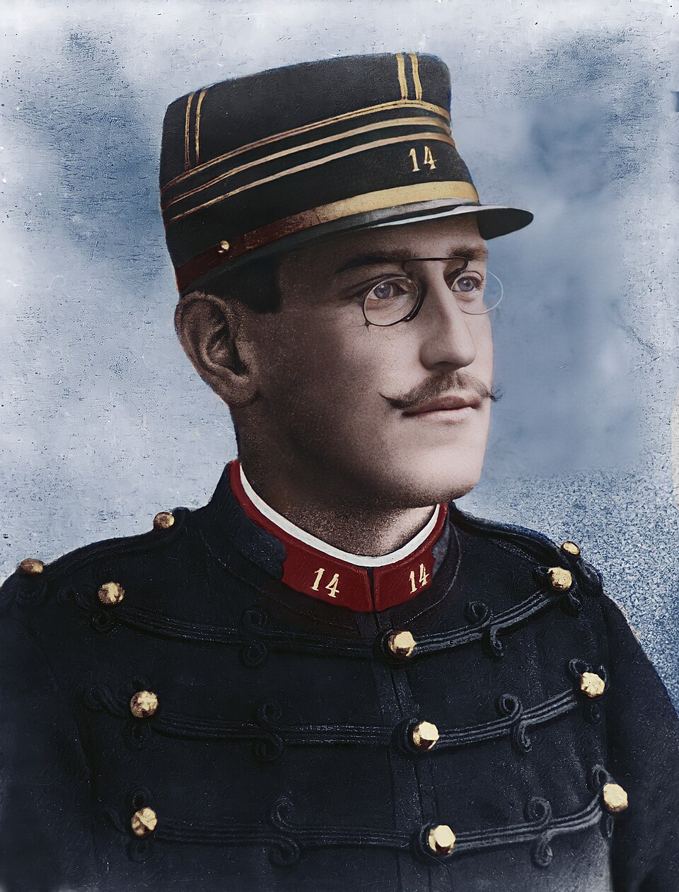

FILE A42-HS-006 // HISTORY & SOCIETIES
The Dreyfus Affair and the Secret Dossier
ASSESSMENT: A documented military cover-up around false treason evidence.
French captain Alfred Dreyfus was wrongly convicted for treason in 1894. Senior officers protected the verdict with secret evidence and later concealed the real author of a key memorandum. The affair is not an allegation of a hidden Jewish conspiracy; it is a documented misuse of state power and antisemitic scapegoating.

.jpg){kind=link}
Claim and historical context
The court-martial relied on a bordereau and undisclosed materials that Dreyfus could not challenge. In 1896, Colonel Georges Picquart identified handwriting pointing toward Ferdinand Walsin Esterhazy. Instead of reopening the case, officers transferred Picquart and shielded the institution.
Chronology and primary record
The French military’s later “secret dossier” contained material presented to judges without defense access. Colonel Henry forged a document to reinforce the accusation; when exposed in 1898, he confessed and died by suicide in custody. Official records and trial proceedings document the falsification.
What the record establishes
Dreyfus was retried in 1899 and again convicted, then pardoned. In 1906 France’s highest court quashed the conviction and cleared him. This sequence demonstrates that formal review did not immediately overcome institutional resistance or the damage of secret evidence.
Competing interpretations and counterevidence
Scholars debate individual motives and the balance between antisemitism, military honor, and bureaucratic self-protection. The records do not support claims that every officer conspired from the outset. They do show officials concealed exculpatory information after doubt became substantial.
Calibrated verdict
The verdict is a proven wrongful conviction sustained by a narrower, documentable cover-up and forged evidence. Contemporary anti-Jewish politics shaped the prosecution, while Dreyfus’s eventual exoneration came through public advocacy and judicial review—not a concealed secret society.
Evidence that could change this assessment
Newly authenticated correspondence could sharpen the chronology of who knew what, when. It would need to be linked to specific decisions, not generalized allegations about the army. The core finding would change only if independent evidence overturned the documented judicial exoneration.
Source notes and limitations
These selected records and named research sources address The Dreyfus Affair and the Secret Dossier; each citation supports only the specific historical point identified in its note.
- French Court of Cassation, Dreyfus judgment of 12 July 1906Primary judgment quashing the conviction and clearing Dreyfus.
- Legifrance, Court of Cassation judgment, 12 July 1906Primary legal record quashing Dreyfus’s conviction.
- Encyclopaedia Britannica, “Dreyfus affair”Historical overview of the case and political crisis.